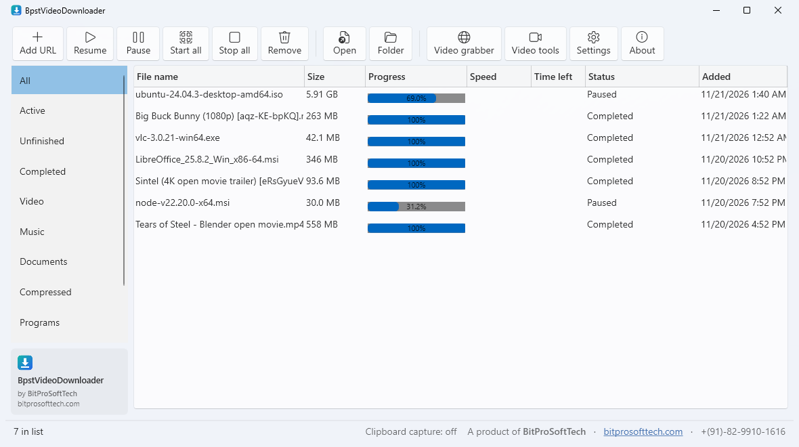

Download anything,
at full speed.
Files, games, ISOs, YouTube in HD, streaming (blob:) videos and torrents, in one app on your PC and your phone. Up to 32 connections per file, resume after anything, and ⚡ Focus to give one download your whole connection.
A product of BitProSoftTech · bitprosofttech.com · +(91)-82-9910-1616

Everything a download manager should do
Built from scratch in C# on .NET 10 and .NET MAUI, with no ads, no bundled offers and no tracking.
Multi-connection downloads
Each file is split into byte ranges fetched in parallel over 1–32 connections, often several times faster than a browser.
Dynamic segmentation
When a connection finishes early it takes over half of the largest remaining part, so every connection stays busy to the end.
Pause & resume
Progress of every part is saved. Downloads continue after pausing, closing the app, a crash or a reboot. Retries back off automatically.
Clipboard capture
Copy a file or video link in any app and the download dialog pops up. You can also drag links onto the window or press Ctrl+V.
YouTube in HD & 1000+ sites
Separate HD video and audio streams are downloaded in parallel and merged into one MP4. Choose Best, MP4, 4K to 360p, or audio only. Works on Android too.
Torrents
Magnet links and .torrent files: pick the files you want, DHT, peer exchange, automatic router port opening, fast resume and a seeding ratio.
⚡ Focus mode
Need one file now? Focus gives it the whole connection; the others slow to a trickle but keep their place, and go back to normal when it's done.
Android app
The same engine on your phone: runs in the background with a progress notification, "Share → BDM" from Chrome or YouTube, and files land in Download/BDM.
Video Grabber
For blob: players and unsupported sites: open the page, press Play, and download the real HLS, DASH or MP4 stream it detects.
Queue & categories
Choose how many downloads run at once. Files are sorted into Video, Music, Documents, Compressed, Programs and Images.
Built for long downloads
Automatic retries when the network drops, a check that the server's file didn't change, keep-awake while downloading, and a speed limit if you need it.
How the speed-up works
Servers often limit the speed of a single connection. BDM asks for different parts of the file at the same time and writes each part straight into its place on disk.
- It checks the file size and whether the server allows byte-range requests.
- It splits the file into parts, one per connection.
- When a part finishes, that connection splits the largest remaining part and helps with it.
- Progress is saved every few seconds, so nothing is lost if you stop.
The app shows this live segment map for the selected download.
Video downloads
Three ways in, depending on what you have.
A video page link
Paste, copy or share a YouTube (or other site) link and pick a quality. The HD video and audio streams are joined into one MP4: by FFmpeg on Windows (installed automatically the first time) and by Android's own media muxer on phones.
Age-restricted or private
Sign in once to YouTube, Instagram or Facebook, inside the app. Your password goes only to that site; the session stays on your device and you can sign out any time.
✨ Smart Finder
Search for a game, software, e-book, PDF, document, course, movie or web series and filter by category, language or Free / Paid. See where to buy it, which streaming services in your country have a movie or series (Netflix, Prime Video, JioHotstar, ZEE5, SonyLIV…), free legal downloads (open-source installers, free games, public-domain books and films, research papers) and official torrents, then download with one click. Cracks and piracy sites are never shown.
Facebook & Instagram
Paste a public Facebook video or Instagram reel link. Login-only posts work after you sign in.
A blob: address
A blob link only exists inside the browser tab that made it. Open the page in the Video Grabber, press Play, and download the stream behind it.
Copy-protected (DRM) services such as Netflix, Prime Video, JioHotstar or Disney+ can't be downloaded: BDM recognises their links and tells you straight away, and the Grabber tells you when a page uses DRM. Use the official app's offline downloads for those. Only download content you have the right to download.
Install
No administrator rights needed. .NET is built in, so nothing else has to be installed first.
Windows 10 / 11
BDM-Setup.exe adds a Start menu shortcut and an uninstaller, can open magnet links and .torrent files, and updates an installed BDM in place: just run the new Setup, your downloads and settings are kept.
Android 8+
BDM-android.apk: open it on your phone and allow “Install unknown apps” for your browser. Files are saved to Download/BDM. To update, open the newer APK and tap Update. (Coming from 2.0.0? Uninstall it once first.)
Security warnings
Builds aren't code-signed yet. On Windows, SmartScreen may warn: click More info → Run anyway. PCs with Smart App Control turned on block unsigned apps.
All versions
Every release stays available. Latest release · all releases with notes and checksums
| Version | Date | Windows | Android | Notes |
|---|---|---|---|---|
| 2.2.0 | 2026-11-28 | Setup .exe | .apk | Latest. Movies & web series in Smart Finder, by language |
| 2.1.1 | 2026-11-28 | Setup .exe | .apk | Setup updates an installed BDM in place |
| 2.1.0 | 2026-11-22 | Setup .exe | .apk | Smart Finder, Facebook/Instagram sign-in |
| 2.0.0 | 2026-11-21 | Setup .exe | .apk | New Windows + Android app (dev-signed APK, see Updating) |
| 0.1.0 | 2026-11-20 | Setup .exe | – | First release (Windows only) |
Questions
Is it really free?
Yes. BDM is free and open source under the MIT License: no ads, no bundled software, no telemetry. You can read, change and share the code.
Why does it need yt-dlp, FFmpeg and Deno?
- yt-dlp finds the real video behind a YouTube or site page. Sites change often; yt-dlp is updated just as often, and the app updates it daily.
- FFmpeg joins the separate HD video and audio streams into one file and converts audio to MP3.
- Deno (or an installed Node.js) runs the JavaScript YouTube now requires.
They're separate open-source programs, downloaded from their official GitHub releases into the app's own folder, not bundled.
Why can't I download a blob: link directly?
A blob: address is a temporary in-memory handle inside one browser tab, so no outside program can open it. The player behind it loads a normal stream; the Video Grabber catches that stream while the page plays.
Where is my data stored?
In %LOCALAPPDATA%\BDM: the download list, settings, video tools, logs and (if you used it) your video-site sign-ins. Nothing is sent anywhere except the downloads you start.
Something went wrong. How do I report it?
Open an issue on GitHub and attach the log from %LOCALAPPDATA%\BDM\logs.
Build from source
Requires Windows 10/11, the .NET 10 SDK with the MAUI workloads, and (for Android) the Android SDK and a JDK, all included in Visual Studio's .NET MAUI workload. Contributions are welcome.
git clone https://github.com/mycodeclub/BpstDownloadManager.git cd BpstDownloadManager dotnet test tests/Bdm.Core.Tests dotnet build src/Bdm.App -f net10.0-windows10.0.19041.0 dotnet build src/Bdm.App -f net10.0-android
| Folder | What's inside |
|---|---|
src/Bdm.Core | The engine for every platform: segmented downloads, HLS, torrents, YouTube, queue, Focus mode, speed limits |
src/Bdm.App | The .NET MAUI app (Windows, Android, iOS-ready): pages, Video Grabber, video-site sign-in, platform services |
tests/ | Unit tests, including downloads against a local test server |
installer/ | Inno Setup script; build-installer.ps1 builds the exe and installer |